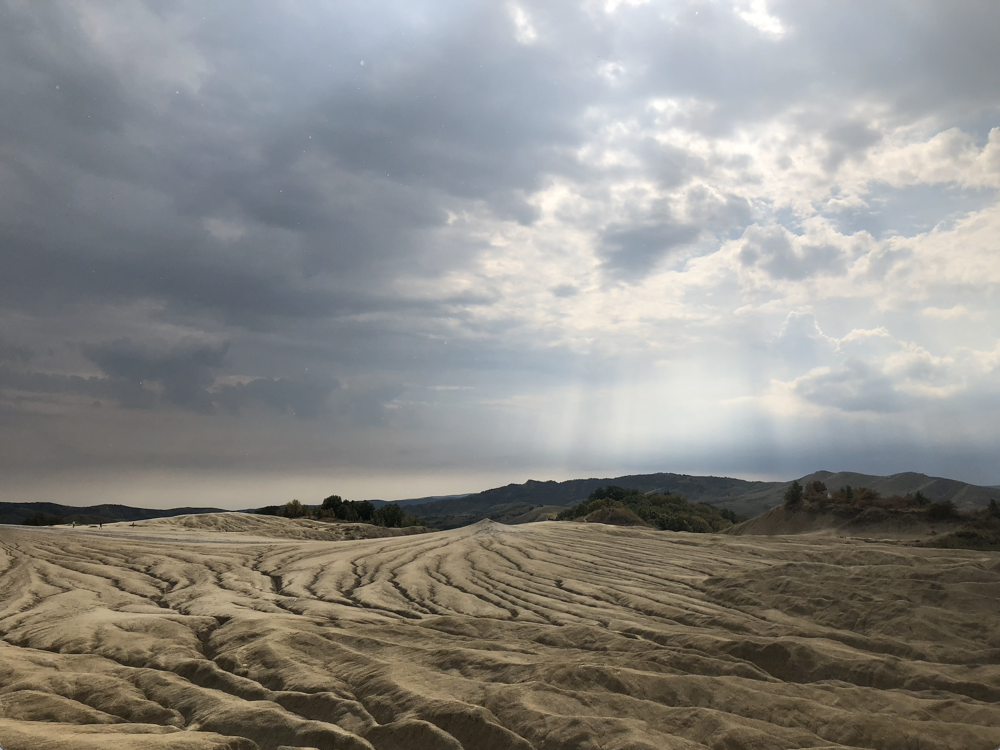
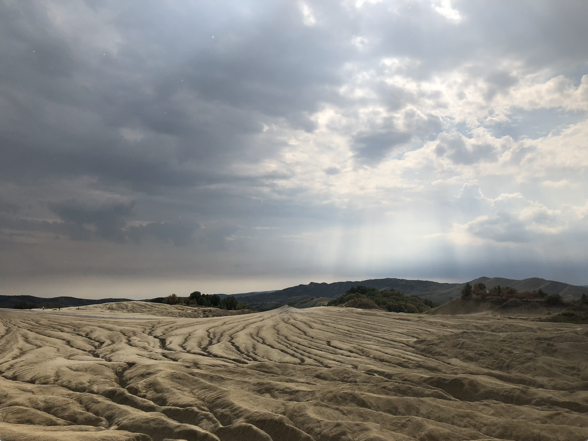
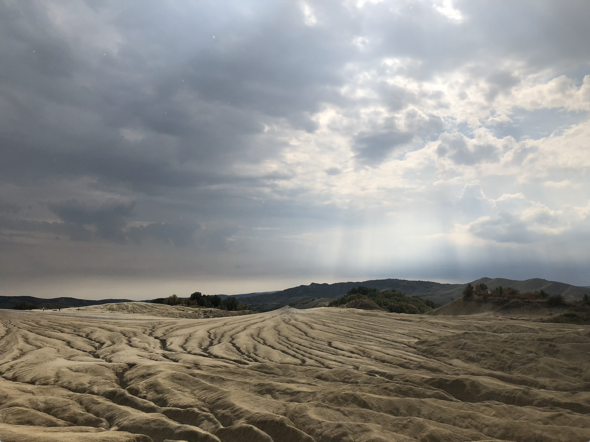

I grew up in a small suburb of the city of Belfast - I would recommend visiting if you haven't and may as well do Dublin too, because you're already so close!
I enjoy solving interesting problems and exploring what is possible; I think theoretical physics has a lot of these so hence I enjoy it.
I love to go for long walks and hikes at most times of the year and enjoy some variation of sports.
When it is too cold or rainy I like to go to museums and cook nice meals and snacks.
I am always up for trying something new!
I like to travel when I have the time. Here are some photos of nice places I have been:



Here is a little pictogram of places I have visited in Europe (I will try and keep this updated). Try for yourself!